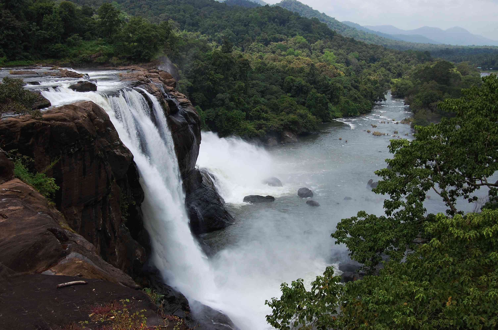
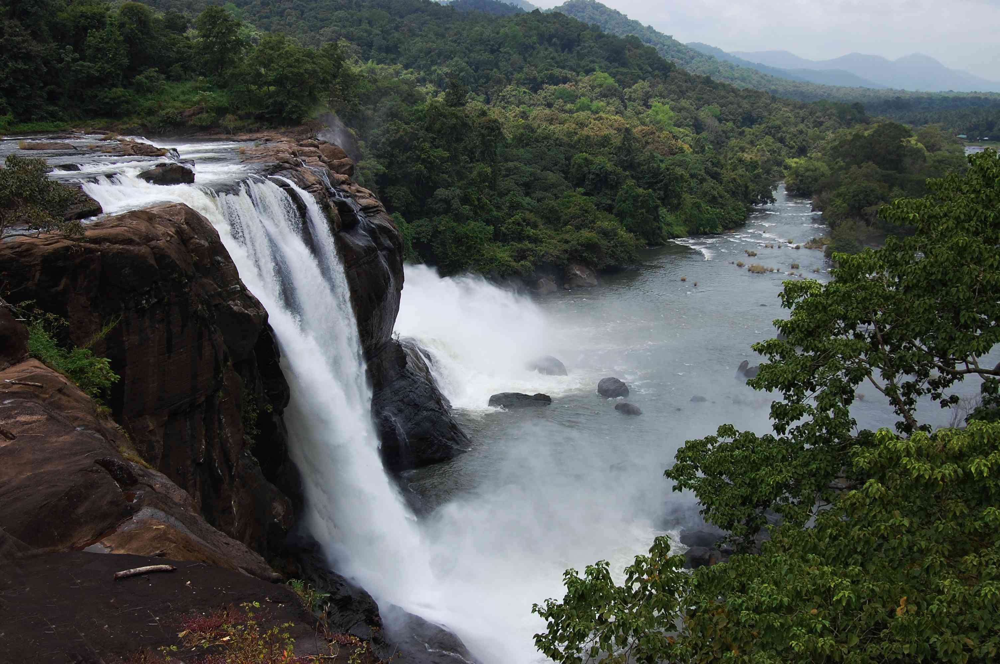
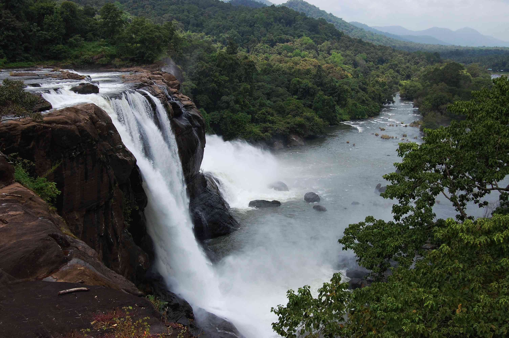

Athirapilly Falls is situated in Athirapilly Panchayat in Chalakudy Taluk of Thrissur District in Kerala, India on the Chalakudy River, which originates from the upper reaches of the Western Ghats at the entrance to the Sholayar ranges. It is the largest waterfall in Kerala, which stands tall at 81.5 feet. Just a short drive from Athirapilly to the Vazhachal Falls, which is close to dense green forests that are home to many endangered and endemic species of flora and fauna. There is another waterfall on the way from Athirapilly to Vazhachal Falls, in close proximity to the road, which is locally called "Charpa Falls". Athirappilly Falls is the largest waterfall in Kerala and is nicknamed "The Niagara of South India".
